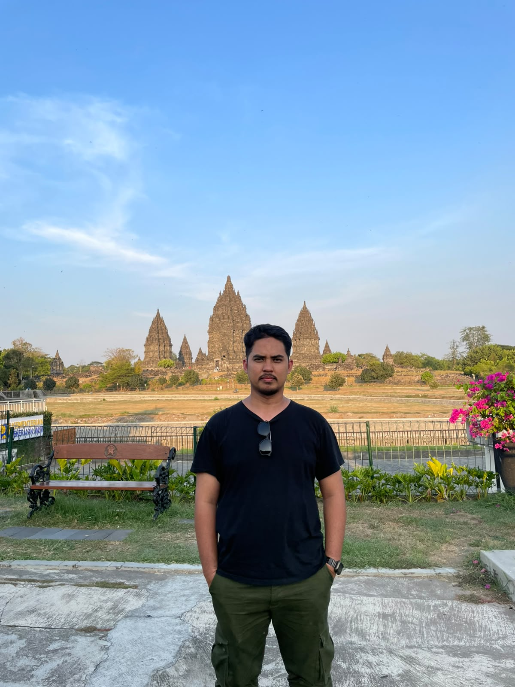

× × × × × ×
× × × × × ×
× × × × × ×
PORTOFOLIO
20162026
Panji Nugraha · Network Engineer
about me

ABOUT ME
PANJI
× × × × × ×
× × × × × ×
× × × × × ×
Halo, terima kasih sudah berkunjung! Saya Panji Nugraha, lulusan S1 Teknik Elektro Universitas Sultan Ageng Tirtayasa yang berdomisili di Tangerang. Sejak 2016 saya berkarier di bidang broadcast, jaringan, dan keamanan sistem, mulai dari merancang topologi, instalasi perangkat Cisco & Mikrotik, hingga mengintegrasikan sistem OT SCADA ke dalam jaringan IT.
Contact me
Network
SKILLS
Sertifikasi & Training
- MTCNA Certified
- MTCRE Certified
- CCNA Training
- CCNP Training
- NSE 4 (Fortinet) Training
- Wazuh Training
Keahlian Kerja
- 01Desain Topologi Jaringan
- 02Instalasi Cisco & Mikrotik
- 03Instalasi Kabel Jaringan
- 04Troubleshooting Jaringan
- 05Integrasi OT SCADA ke IT
- 06Keamanan OT & IT
Certified
SERTIFIKAT
Career
PENGALAMAN
-
01/2018 — Sekarang
Tenaga Ahli Bidang Jaringan
Dinas Sumber Daya Air DKI Jakarta
- Memberikan solusi dan merancang topologi jaringan
- Instalasi perangkat dan kabel jaringan
- Troubleshooting dan perbaikan jaringan
- Integrasi OT SCADA ke dalam jaringan IT
- Memberikan solusi keamanan untuk OT dan IT
-
05/2017 — 12/2017
Network Engineer
PT Securisafe Indoprima, Tangerang
- Merancang topologi jaringan
- Instalasi perangkat jaringan Cisco
- Instalasi perangkat jaringan Mikrotik
-
05/2016 — 05/2017
Broadcast Engineer
PT MNC Indovision, Jakarta
- Monitoring ITX Server
- Troubleshooting dan perbaikan masalah broadcast
Personal
HIGHLIGHTS
- Menginisiasi pekerjaan tim agar lebih efisien
- Mencarikan solusi terbaik untuk tim
- Menjadi leader yang memberi contoh nyata kepada anggota tim
Study
PENDIDIKAN
S1 — Teknik Elektro
Universitas Sultan Ageng Tirtayasa, Banten
Fun
HOBI
- 🎸 Musik
- 🏃 Lari
- 🏊 Renang
- 🎮 Gaming
NETWORK PORTOFOLIO2016 — 2026
× × × × ×
× × × × ×
× × × × ×
THANK YOU
Tertarik bekerja sama? Silakan hubungi saya.
Kirim Email
Panji100991@gmail.comTangerang, Indonesia